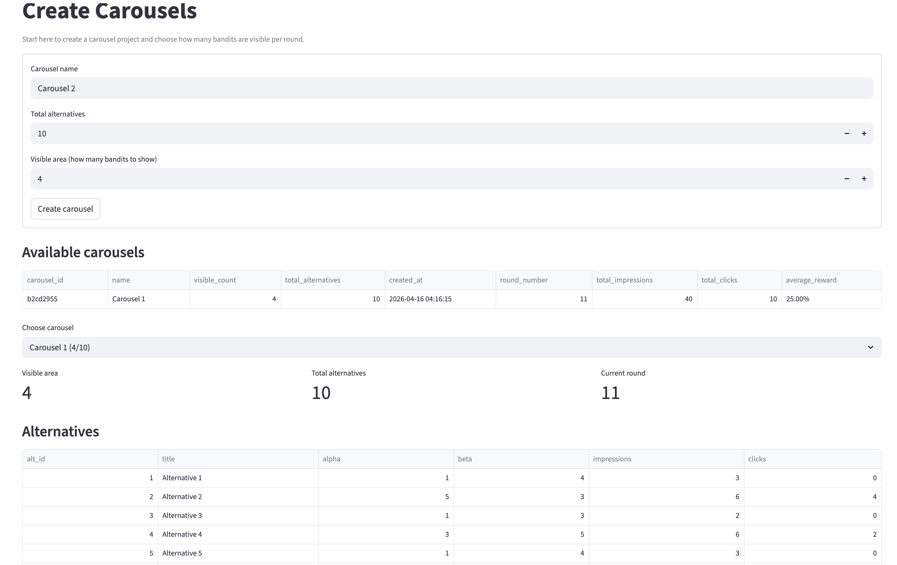
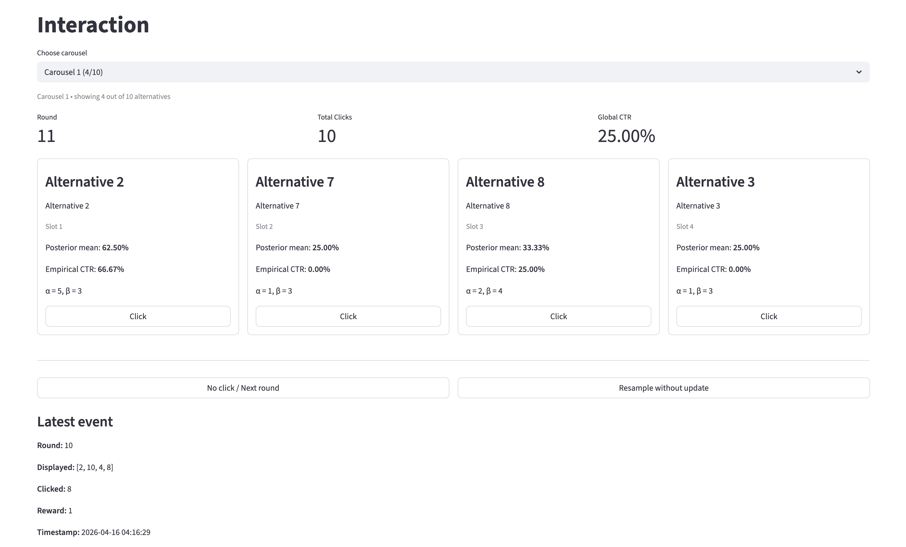
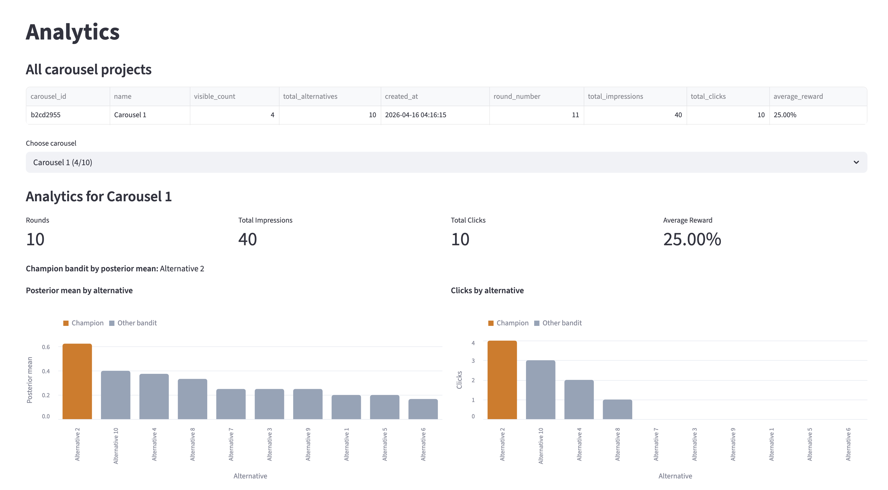
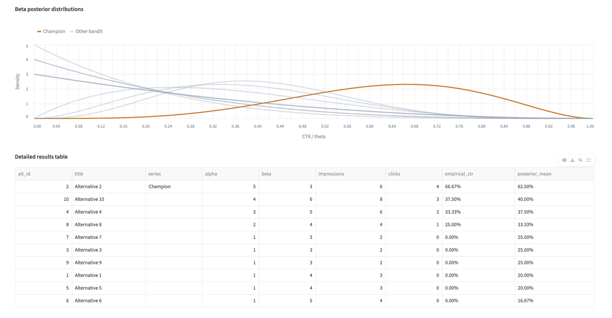

Product
Bayesian Carousel Bandits
Bayesian Carousel Bandits
Project Summary
This project is a Bayesian Carousel Optimization application built for a Marketing Analytics group project.
The product simulates a real-world marketing problem where a team has multiple creative alternatives, offers, or content items (bandits), but can only show a limited number of them in a visible carousel area at a time.
Instead of randomly choosing which alternatives to display, the system uses Bayesian learning and Thompson Sampling to adaptively prioritize the alternatives that appear to perform better based on observed user clicks.
The MVP is implemented as a multi-page Streamlit app and is designed as the frontend prototype of a larger product that can later be integrated with a backend API, database, and deployment pipeline.
Problem Definition
Business Problem
Marketing teams often need to choose among multiple alternatives such as:
- promotional banners,
- campaign creatives,
- product cards,
- or recommendation tiles.
However, only a limited number of alternatives can be shown to users at once in a carousel or visible content area.
The key challenge is:
How can we decide which alternatives to show in each round so that we learn from user behavior and gradually improve click performance over time?
A static rule-based system or random selection is inefficient because:
- it may keep showing underperforming alternatives,
- it does not learn from feedback,
- and it does not balance experimentation with optimization.
Specific Problem Statement
We want to build a product that:
- creates carousel projects with a configurable number of total alternatives,
- chooses only a subset of alternatives to display in the visible area,
- collects interaction feedback in the form of clicks / no-clicks,
- updates beliefs about each alternative after every round,
- and visualizes which alternatives are performing best over time.
This is modeled as a multi-armed bandit problem with:
- Bernoulli rewards
- Beta priors/posteriors
- Thompson Sampling for selection
Proposed Solution
Core Idea
Each alternative in a carousel is treated as a bandit arm.
For every alternative, the system keeps:
- a prior belief about its click-through rate,
- updates that belief after each user interaction,
- and samples from the posterior to decide which alternatives should be displayed next.
The visible area might show, for example:
4 visible alternatives out of 10 total alternatives

At every round:
- the system samples a score for each alternative from its Beta posterior,
- selects the top alternatives according to Thompson Sampling,
- displays them in the carousel,
- observes a user click or no-click outcome,
- updates the posteriors,
- and repeats the process.
This allows the system to balance:
- exploration of uncertain alternatives,
- exploitation of alternatives that already look strong.
Current MVP
What We Have Built
The current MVP is a Streamlit application with 3 pages:
Page 1 | Create Carousels
This page allows the user (Page 1 URL):
- create a new carousel project,
- define the total number of alternatives,
- define the visible area size,
- list all available carousel projects,
- inspect the alternatives of a selected carousel,
- reset a selected carousel.
Page 2 | Interaction
This page is where the live bandit interaction happens (Page 2 URL).
The user can:
- choose a carousel,
- see the currently selected visible alternatives,
- click one of the displayed alternatives,
- move to the next round with no click,
- or resample without updating.
For every round, the app updates:
- impressions,
- clicks,
- alpha / beta values,
- posterior mean,
- and empirical CTR.

Page 3 | Analytics
This page summarizes performance for each carousel project (Page 3 URL).
It currently includes:
- overall carousel project listing,
- total impressions,
- total clicks,
- average reward,
- champion bandit identification,
- posterior mean comparison,
- click comparison,
- Beta posterior distribution visualization,
- detailed results table,
- cumulative reward over time.


Methodology
Reward Structure
We use a Bernoulli reward:
1= user clicked one of the displayed alternatives0= no click for a displayed alternative
Bayesian Model
For each alternative, we model click probability using a Beta-Bernoulli setup:
- Prior:
Beta(alpha, beta) - Outcome: Bernoulli click / no-click
- Posterior update:
- clicked alternative:
alpha += 1 - displayed but unclicked alternatives:
beta += 1
- clicked alternative:
Selection Strategy
We use Thompson Sampling:
- draw one sample from each alternative’s posterior,
- rank alternatives by the sampled values,
- display the top
kalternatives wherek = visible_count.
The Value
This product is a strong fit for Marketing Analytics because it demonstrates:
- experimentation under uncertainty,
- user behavior learning,
- adaptive optimization,
- measurable reward improvement,
- and a clear connection between analytics and product decision-making.
Instead of simply reporting past A/B test results, the system actively decides what to show next based on observed performance.
Architecture
The final product can evolve into:
- Frontend: Streamlit
- Backend: FastAPI
- Database: PostgreSQL
- Analytics service: Python-based bandit engine
- Deployment: Docker / containerized services
Steps to Achieve the Full Product
Step 1 | Finalize the MVP logic
- validate carousel creation flow,
- validate selection and update rules,
- confirm reward assumptions,
- confirm analytics outputs.
Step 2 | Separate frontend from logic
- move bandit logic from Streamlit session state into reusable backend functions,
- define clear API contracts,
- keep Streamlit as the UI layer only,
- learn basic requests with
FastAPI
Step 3 | Build backend endpoints
Planned API functionality:
- create carousel,
- list carousels,
- fetch selected visible alternatives,
- submit click / no-click feedback,
- get analytics for a carousel,
- reset or delete a carousel.
Step 4 | Add database persistence
Create PostgreSQL tables for:
- carousel projects,
- alternatives,
- interaction history,
- posterior parameters,
- analytics summaries.
Step 5 | Connect frontend to backend
Update the Streamlit pages so they:
- fetch data from API,
- submit interaction events,
- display live analytics from the database.
Step 6 | Improve analytics
Extend the analytics layer with:
- richer reward history,
- posterior distribution comparison,
- best-bandit explanation,
- possible regret or lift analysis.
Step 7 | Polish product UX
- improve visual hierarchy,
- improve labeling and explanations,
- add screenshots and deployment URL,
- add project documentation.
Step 8 | Containerize and deploy
- add Docker support,
- configure environment variables,
- deploy the frontend,
- connect deployed frontend to backend and DB.